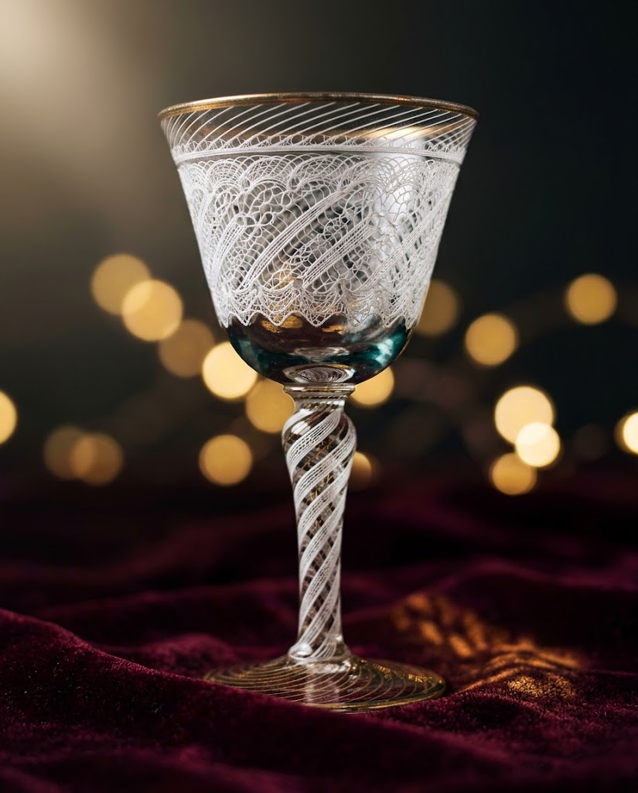
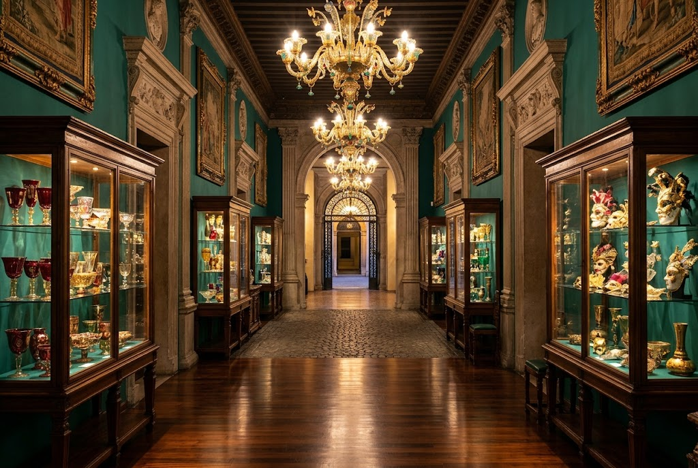

ヴェネツィアの光を、
小樽へ。

北一ヴェネツィア美術館は、イタリア・ヴェネツィアの文化とヴェネツィアガラスを紹介し、守り伝えることを目的に、1988年に設立されました。
ヴェネツィアのガラス工房や多くの作家が設立の趣旨に賛同。1000年の歴史を持つヴェネツィアガラスの高い技術と芸術性を伝える、約3000点の作品や家具調度品を収蔵・展示しています。
- 設立
- 1988年
- 収蔵・展示
- 約3000点
この美術館ならではの魅力

-
ガラス工芸を体系的に鑑賞
ヴェネツィアの伝統的なガラス工芸の美術作品を、流れに沿ってじっくりと鑑賞できます。
-
多彩な作品を間近に
手作りのガラスペンやアクセサリー、華やかなカーニバルマスク、金彩グラスなど、さまざまなジャンルの作品を近くで楽しめます。
-
工房直輸入のミュージアムショップ
館内のショップには、ヴェネツィアの工房から直接届いたアイテムが揃います。
イチオシの展示
16〜18世紀を中心に、
歴史ある工芸品から
現代作家の秀作まで。
多様なヴェネツィアガラスを展示。伝説的な技法として知られる「レースガラス」や、「ムラノガラス」の逸品を間近でご覧いただけます。
ご来館者の声
美術品には疎い私ですが、それでも入館料以上の価値がありました。
当時のヴェネツィア貴族の生活が垣間見える展示品（大量の食器類や鏡、絵画（フレスコ画も少々）等）が飾られていて、とても上品で綺麗でした。私が行ったときは3Fでヴェネツィアガラスの巨匠作品が展示されてましたが、ここは期間限定で年に数回作品の入れ替えがあるようです。
1F以外撮影不可なのが些か残念ですが、小樽に来た際は一度は訪れてみてもいいかもしれません。
ダイアナ妃が乗られたゴンドラはチケットを買えば見に行けます。
様々な貴族のものが展示されており、チケットも安価なのでぜひ行ってみてください。
内部は撮影不可です。
※ご来館者の口コミです。展示内容は変わることがあります。
施設案内
- 施設名
- 北一ヴェネツィア美術館
- 住所
- 北海道小樽市堺町5-27
- 定休日
- 無休
- 公式サイト
- venezia-museum.or.jp
開館時間・入館料・展示内容・撮影のルールは、お出かけ前に公式サイトでご確認ください。